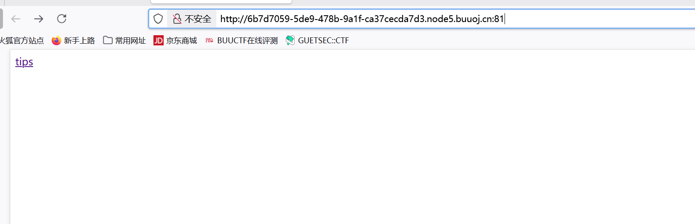
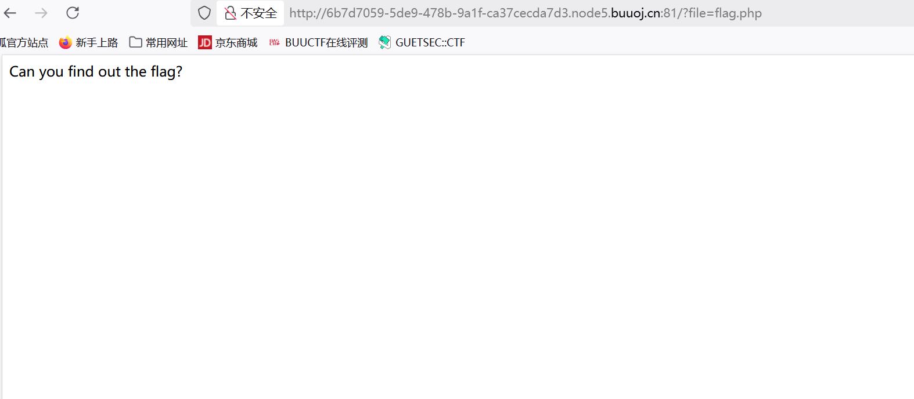
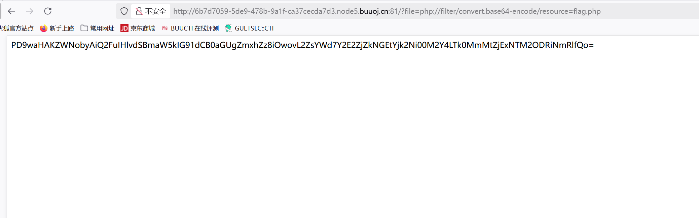
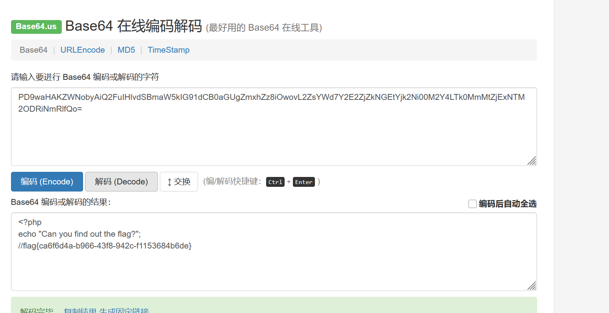

BUUCTF-WEB-[ACTF2020 新生赛]Includ1
本文为记录个人信安小白的刷题路程，大佬勿喷，也同时希望文章能对您有所帮助
打开环境，发现一个超链接

跳转到一个新页面,只看到一个语句：can you find out the flag?查看两个页面的源码也没有什么可用信息，但注意一下该网页的URL,后面以GET请求访问文件flag.php

想起题目内容Include,文件包含，试试伪协议
最常用的是php://filter (用于读取源码)
php://filter的基本语法：
1 | php://filter/<要应用的过滤器>/resource=<文件路径> |
过滤器：指定对数据流进行何种处理（如 convert.base64-encode）
resource=<文件路径>：指定要读取的文件（如 flag.php）
本题就可编写一个常用的payload
1 | ?file=php://filter/convert.base64-encoe/resource=flag.php |
flag会以base64编码形式出现，去网上随便搜索一个解码器


获得flag
php伪协议
在 CTF Web 题目中，使用 PHP 伪协议（如 php://filter）读取源码 的核心原理涉及 PHP 的文件流包装器（Stream Wrappers） 和 过滤器（Filters） 机制。
PHP 提供了多种伪协议（如 php://input、php://memory、php://filter），其中 php://filter 允许在读取或写入数据流时进行 编码/解码 或 内容转换。
php://filter的基本语法：
1 | php://filter/<要应用的过滤器>/resource=<文件路径> |
过滤器：指定对数据流进行何种处理（如 convert.base64-encode）
resource=<文件路径>：指定要读取的文件（如 flag.php）
为什么能读取 PHP 源码？
正常情况下，如果直接包含（include/require）一个 PHP 文件，PHP 解释器会 执行该文件，而不是显示源码。但使用 php://filter 时：
绕过 PHP 解释：php://filter 不会直接执行 PHP 代码，而是 以数据流的方式读取文件内容。
编码转换：通过 convert.base64-encode 等过滤器，将 PHP 源码转换为 可输出的格式（如 Base64），从而避免被解析执行。
通俗来讲，一般情况下，包含php文件，会执行php代码，而使用php://filter伪协议可以直接看到php源码（个人理解）
像上述题中的flag.php源码(就是base64解码后的内容)
1 |
|
会在页面中显示Can you find out the flag?
但后面注释掉的flag是执行不了的
为什么 CTF 题目允许这样操作？
通常是因为题目存在 文件包含漏洞（LFI, Local File Inclusion），例如：
1 |
|
攻击者可以控制 file 参数，利用 php://filter 读取源码，而不是直接执行它。
在 CTF Web 题目中，这种方法常用于 获取后端源码，进而分析漏洞（如敏感信息、RCE 等）。